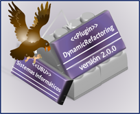

Dynamic Refactoring Plugin

This guide will help you use the application. Along this guide, the functioning of the tool is explained with detail.
You can use this plugin to define and build your own refactorings or to customize the ones that have already been included. It is also possible to delete the ones that are not needed anymore.
Once you have defined a new refactoring, you will be able to run them on Eclipse immediately, since the list of available refactorings is populated dynamically by the plugin.
If you need to import or export refactorings you will be able to do so easily thanks to the wizards that will help you throughout the process.
You can also import or export a refactoring plan.